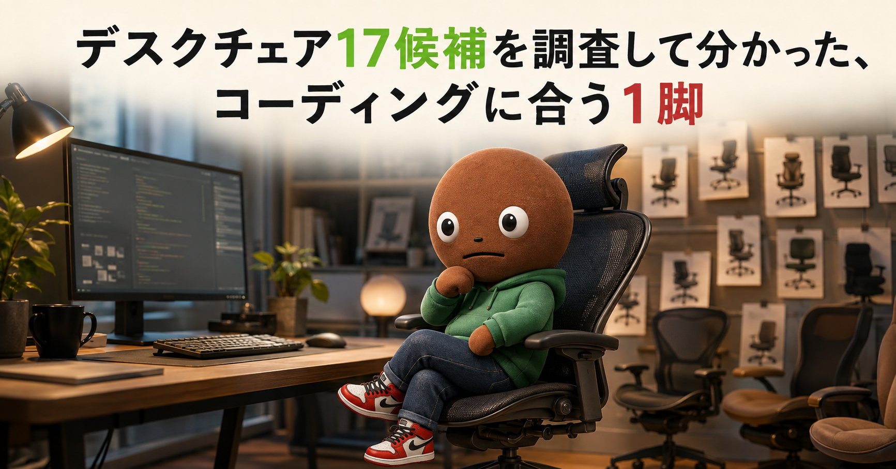
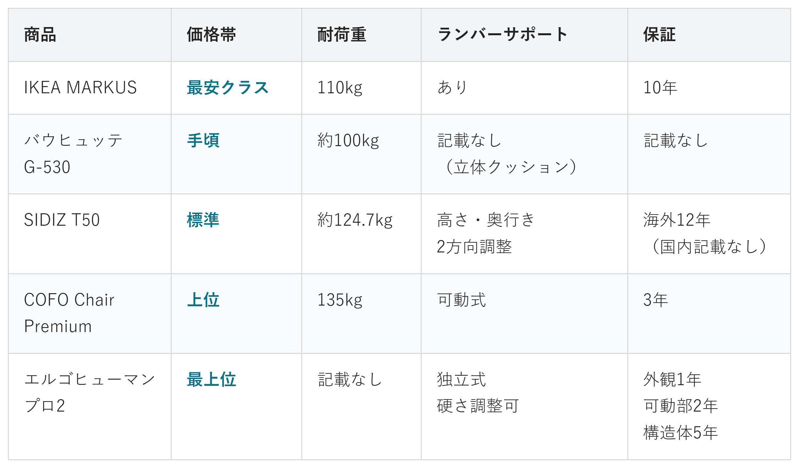
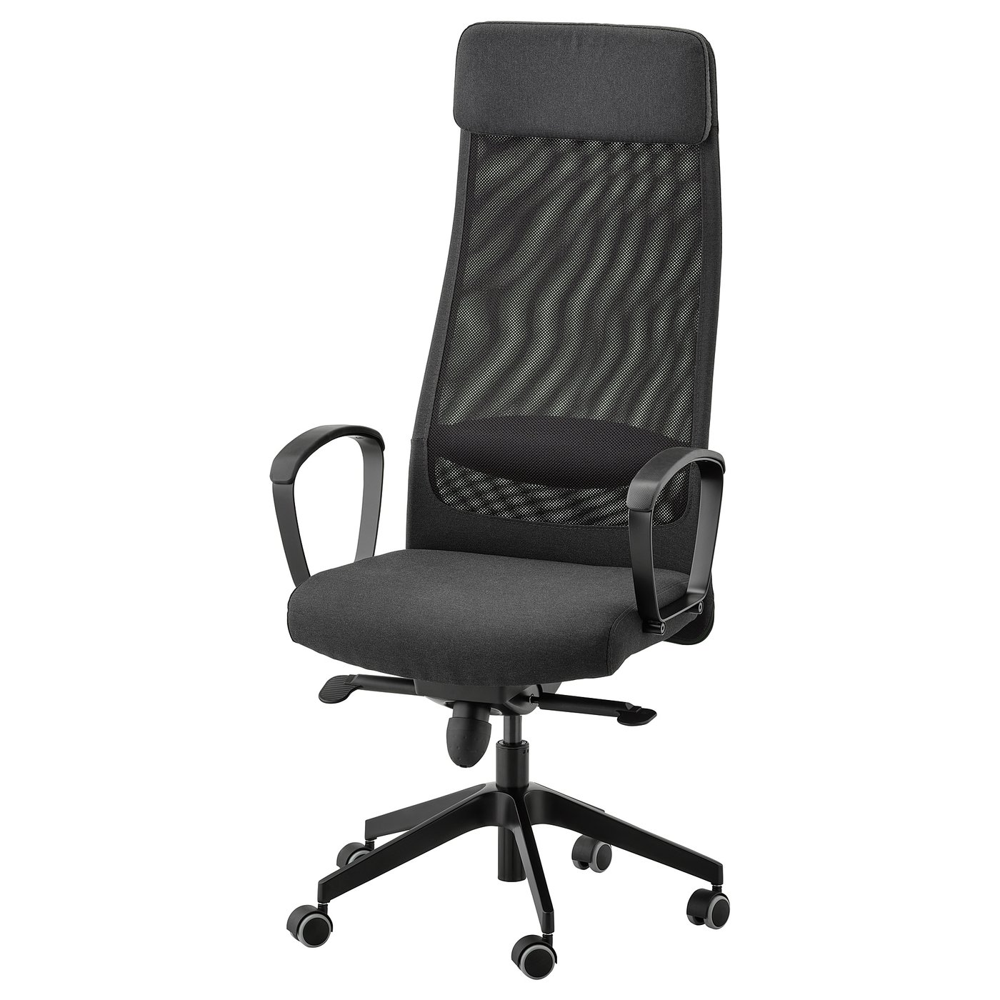
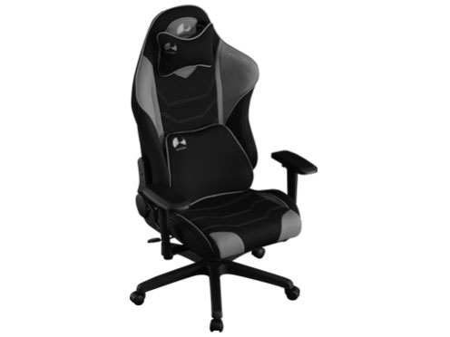
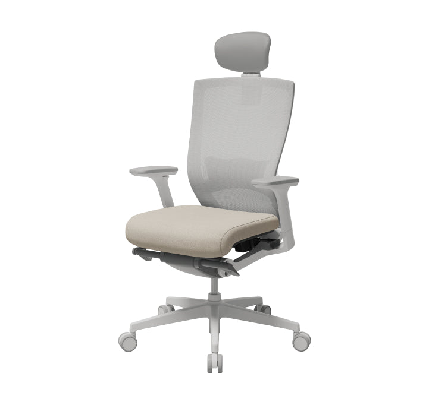
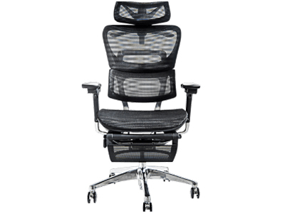
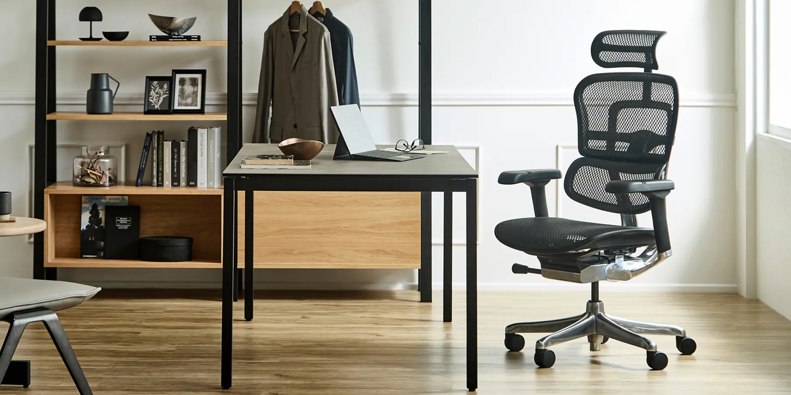

この記事はAmazonアソシエイト・プログラムの参加者として、
紹介料を得る場合があります（PR）。
仕様は調査時点の情報です。
長時間座ると腰や肩が痛くなる人へ

コーディングをしていると、
気づけば何時間も
同じ椅子に座っています。
腰や肩が痛くなって、
椅子のせいかもと
思ったことはないですか。
種類が多すぎて、正直迷います。
なので今回、価格.com・各メーカー公式・
楽天/Yahoo!公式ストアを調査。
低評価や評判に疑いのある商品も含めて
計17候補から5商品まで絞り込みました。
各商品の実際の低評価レビューも読んだうえで、
向いてる人・向いてない人をまとめているので、
自分に合ったデスクチェアを探してみてください。
IKEA、バウヒュッテ、SIDIZ。
COFO、エルゴヒューマン。
オカムラ2機種、ハーマンミラー。
AKRacing、コクヨ、イトーキ。
GTRACING、ニトリ、山善までの
14候補です。
この中から、5つに絞りました。
オカムラのコンテッサIIは、
14候補の中で最上位クラスの
価格帯で、耐荷重などの
情報も薄かったため見送りました。
オカムラのバロンとハーマンミラーの
セイルチェアも、価格の出典が
はっきりしなかったため見送りました。
AKRacingは、価格帯や耐荷重が
SIDIZ T50と近く、役割が
重複するため対象外としました。
コクヨ・イトーキ・ニトリの3つは、
価格の出典自体が見つからず、
比較する数字が揃いませんでした。
GTRACINGと山善は、
バウヒュッテやIKEA MARKUSと
価格帯・特徴が重なるため
比較から外しました。
14候補とは別に、
満足度が低い商品や、
評判に疑いがある商品も
3つ調べました。
価格.comの満足度ランキングでは、
不二貿易の「ゲーミングチェア
シグナル」が満足度3.67で、
14位中最下位でした。
評価件数はわずか3人です。
サクラチェッカーというサイトでは、
GXTRACEというメーカーの
チェアが指摘されていました。
レビュー件数が4,011件と、
カテゴリ平均198件の
20倍以上という異常な数字でした。
もう1つ、RAKUという
ブランドのチェアです。
価格帯が「やらせレビュー」の
多い価格帯に近く、
判定不可とされていました。
これで合計17候補を見た上での、
5商品の比較になります。
調べてわかったのは、
基準はシンプルということです。
1つ目は「耐荷重」。
自分の体格に見合うか。
2つ目は「保証期間」。
長時間座る椅子なので、
壊れた時の安心感に関わります。
ランバーサポート（腰当て）は、
今回比較した5商品すべてに
ついていました。ここは
差になりにくいポイントです。

価格帯・耐荷重・ランバーサポート・保証の比較
（価格帯は最安クラス〜最上位の5段階）
とにかく安く、
長く使いたい人へ
IKEA MARKUS
最安クラス17候補中、5商品の中では最安クラス。
保証年数は国内公式ページで
確認できた中で最長でした。

安さと保証の長さで選ぶなら、
この1台です。
耐荷重は110kg。
座面は幅53×奥行47cm。
ランバーサポート付きです。
アームレストは固定式で、
細かい可動はありません。
保証は10年。
国内向けの公式ページで
確認できた保証としては、
今回の中で一番長い方です。
素晴らしい安定感。
仕事場にももってこい。
私みたいにあまりこだわりない人は
これがいいかもです。
ゲーミングと
コーディングを兼用したい人へ
バウヒュッテ G-530
手頃4Dアームレストで伸縮幅87mm。
腰まわりは立体クッションで
支える構造です。

ゲーミングチェアとしての作り込みと、
実用性を両立したいなら
この1台です。
参考：楽天市場レビュー
耐荷重は約100kg。
本体サイズは幅730×奥行725mm
（725〜1130mm）です。
独立式のランバーサポートという
記載はなく、保証期間も
情報源に記載がありませんでした。
無い情報は推測で埋めていません。
座面や肘の位置を
細かく体に合わせたい人へ
SIDIZ T50
標準ランバーサポートは高さ・奥行きの
2方向調整、アームレストは3方向可動。
5商品中もっとも調整幅が
広い1台です。

細かい調整幅を重視するなら、
この1台です。
参考：サクラチェッカー
耐荷重は約124.7kg
（海外公式サイト調べ）。
外寸は幅688×奥行642mm、
座面奥行は480mmです。
アームレストは
3方向に動きます。
保証は、海外のSIDIZ公式
サイトには「最大12年」と
ありましたが、国内の
正規代理店のページには
年数の記載が
見当たりませんでした。
体重をしっかり
支えてほしい人へ
COFO Chair Premium
上位耐荷重135kgは、数字が確認できた
4商品の中で最もタフでした。

耐荷重の安心感を最優先するなら、
この1台です。
参考：はるママの気まぐれ日記
座面は幅52.6×奥行49cm。
奥行は5.5cmまで
調整できます。
ランバーサポートは
可動式です。
アームレストは4D。
保証は3年でした。
個人的にはこれかなぁ。
凄くデザインがタイプで
私が買うとしたらこれですね。
長く使う椅子に
投資したい人へ
エルゴヒューマン プロ2
最上位保証は外観1年・可動部2年・
構造体5年の3段階。
壊れ方ごとに年数が
決まっている作りです。

価格より長期的な安心感を
重視するなら、この1台です。
参考：会社脱出装置
耐荷重は、公式サイトを
含めどこにも記載が
見当たりませんでした。
無い情報は推測で埋めません。
ランバーサポートは独立式で、
硬さも調節できます。
アームレストは4Dです。
14商品以上を比較していて、
一番驚いたのはエルゴヒューマンでした。
価格帯は5商品の中で
断トツに高いのに、
耐荷重の数字がどこにも
書かれていません。
普通なら「情報不足」で
終わる話です。
でも保証の内訳を見ると、
外観・可動部・構造体と
3段階に分かれていて、
壊れ方ごとに年数が
決まっていました。
数字ひとつでは測れない、
安心感の作り方がある。
そんな発見でした。
もうひとつはSIDIZ T50でした。
海外の公式サイトには
保証12年と書かれているのに、
国内の正規代理店のページには、
保証年数の記載が
ありませんでした。
同じ商品でも、
国と販売経路によって
伝わる情報が違う。
「公式サイトだから安心」と
決めつけず、どこの国の
公式かまで見る必要がある。
そう実感しました。
低評価の候補を調べていた時も
気づきがありました。
サクラチェッカーが
指摘していたのは、
異常な数字そのものでした。
「安いから悪い」ではなく、
「レビュー件数がカテゴリ平均の
20倍以上」という点です。
感覚ではなく数字で
見分けられるんだと
勉強になりました。
ここまで読んでもまだ迷ったら、
5商品の中で耐荷重135kgと
最もタフなCOFO Chair Premiumが、
最初の1脚におすすめです。
可動式のランバーサポートと
4Dアームレストで体格差にも
対応しやすく、保証3年という
安心感も外しにくいポイントです。
Q. デスクチェアは組み立てが必要？
A. ほとんどの商品が、届いてから自分で組み立てる形式です。
工具は付属していることが多いですが、時間には余裕を持つのがおすすめです。
Q. 耐荷重ギリギリの体重でも大丈夫？
A. 耐荷重の上限に近いと、ガス圧シリンダーなどの劣化が早まることがあります。余裕を持った耐荷重の商品を選ぶのが無難です。
Q. ランバーサポートが体に合わない場合は？
A. 高さや角度を調整できる商品を選ぶと、体格差による違和感を減らせます。今回の5商品はいずれもランバーサポート付きです。
Q. 保証期間が長ければそれだけで安心？
A. 保証年数は目安の一つです。外観・可動部・構造体など、何が保証の対象かも合わせて確認するのがおすすめです。